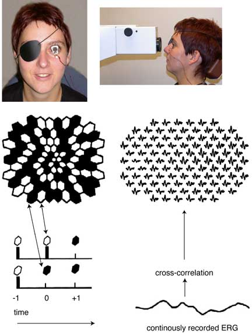
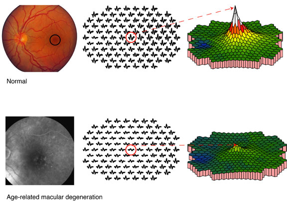

The Multifocal Electroretinogram
What is the Electroretinogram (ERG)?
The electroretinogram (ERG) is a recording of the bioelectric potential, the summed activity of the retinal cells located at the back of the eye, when stimulated by light. When bioelectrical changes occur within the retina, the change is propagated to the surface of the cornea. These small (and often very fast) signals can be captured by an electrode placed on the surface of the cornea. In our lab, we record the ERG with an electrode embedded within a contact lens. The signals are amplified and stored on a computer for further analysis.
The first human ERG recordings were obtained in 1877 by James Dewar, but recordings were not stable enough for quantitative measurements until the introduction of the contact lens electrode in 1941 by Lorrin Riggs. The electroretinogram can be elicited by different kinds of stimulation: by diffuse flashes of light (Ganzfeld), by focal stimulation or by patterned stimulation. In 1991 Erich Sutter developed a new method, combining the advantages of the focal and pattern stimulation into one procedure called multifocal ERG.
The multifocal Electroretinogram
The subject fixates on the center of a display containing an array of hexagons that increase in size from the center outward. In our lab, we usually use 103 hexagons that are displayed on a computer screen. Because the number of cone photoreceptors per area varies for different parts of the retina, the size of the hexagons is adjusted, so about the same number of cones will be stimulated by each hexagon.
While the subject views the display, a single continuous electroretinogram recording is obtained. This recording takes less than 4 minutes. To make it easier for the person being tested, the recording is divided into short segments of 15 to 30 seconds.
During the stimulation, the display appears to flicker because each hexagon goes through a pseudo-random sequence of black and white presentations. Every hexagon in the array is stimulated with the same so-called “m-sequence,” but each hexagon starts at a different point in the sequence. The computer cross-correlates the fluctuations in voltage with each change in the m-sequence. The produces multiple ERG recordings reflecting the retinal response of each of the corresponding stimulated area.

The responses can be demonstrated by the multifocal ERG traces or in a 3-dimentional plot, reflecting the response density distribution across the stimulated area. The peak in the 3-D plot reflects the highest response density. In healthy eyes, this peak is generated by the cells in the fovea. This lowest response corresponds to the area of the optic nerve (blue in the example). In this area there are no cones to generate a response (i.e., blind spot).

Clinical Application
In people with macular degeneration the multifocal ERG technique is a useful tool to detect and quantify central cone function, especially in disease stages with no or subtle visible retinal changes. Depending on the underlying disorder, people with macular degeneration may show reduced and/or delayed central responses. The clinical example (81-year-old patient with soft drusen, visual acuity: 20/50) presented here shows reduced multifocal ERG responses corresponding to the morphological fundus changes (late phase florescein angiography, left panel).
Research
Our main focus is to investigate the normal age-related changes in multifocal ERG responses and to find out and quantify the underlying optical and neural factors contributing to those age-related changes (see recent publications). Additionally, this research will provide a firm foundation for comparison with pathologic changes that occur in the retina.